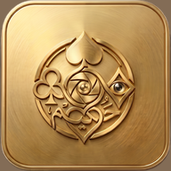

ما في لعبة جارية. ابدأ وحدة جديدة.
أسماء الفرق
اللعبة
عن حكيم
اضغط أي ورقة لتعديلها أو أضف ورقة جديدة.
افرد الأوراق على سطح واضح وصوّرها من الأعلى.
الصورة تُعالَج داخل جهازك ولا تُرفع لأي مكان.
لنا كسبت
0 — 0